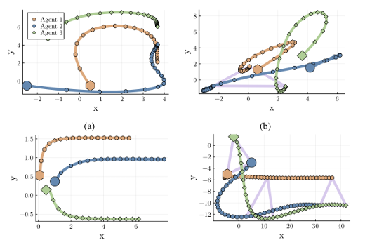
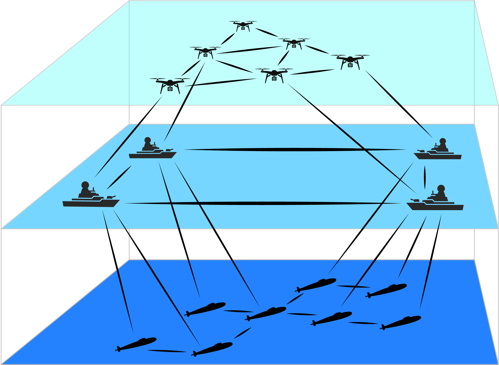

Hi, I'm Trevor Gross
I am a computer science student at the University of Florida, specializing in artificial intelligence, distributed systems, and their real-world applications. Welcome to my personal website!
Learn More
I am a computer science student at the University of Florida, specializing in artificial intelligence, distributed systems, and their real-world applications. Welcome to my personal website!
Learn More
I am a computer science student at the University of Florida with a focus on artificial intelligence. My academic journey reflects a strong passion for AI research, distributed systems, and their applications in solving real-world problems. I have hands-on experience with machine learning, data structures, operating systems, and large-scale computational resources like UF’s supercomputer, HiPerGator.
My research interests center on distributed optimization, multi-agent systems, and theoretical AI foundations. I am currently conducting research in the GATAS Lab at UF, focusing on distributed optimization using cellular sheaves. My long-term goal is to pursue a PhD in computer science and contribute to the advancement of AI through fundamental research.
Outside of academics, I enjoy rock climbing and strength training as ways to stay active and maintain balance in my life.
My research focuses on distributed optimization, multi-agent systems, and theoretical AI foundations. I am currently conducting undergraduate research in the GATAS Lab at UF, where I explore how complex systems can be broken into interconnected components that optimize locally while maintaining global coherence. This work has applications in networked decision-making, autonomous systems, and scalable AI architectures.
I am also preparing an application for the University Scholars Program (USP), a competitive UF initiative supporting undergraduate researchers. My goal is to highlight both my technical expertise and my ability to collaborate across disciplines.
Principal Investigator: Dr. James Fairbanks
Institution and Department: University of Florida, Mechanical and Aerospace Engineering
Affiliation Duration: 1 month
Research Focus: Journal expansion of the previous project. Computing additional numerical examples.
Responsibilities: Extending the numerical examples from the previous project to provide additional insights and results for journal publication.
Principal Investigator: Dr. James Fairbanks
Institution and Department: University of Florida, Mechanical and Aerospace Engineering
Affiliation Duration: 9 months
Research Focus: Developing distributed optimization routines for consensus optimization problems. Proposing the alternating direction method of multipliers in homological programming. Computing numerical examples in Julia for multi-agent model predictive control.
Responsibilities: Conducted research on distributed optimization routines, implemented numerical examples in Julia, and contributed to the development of theoretical frameworks for multi-agent model predictive control.
Paper: Distributed Multi-agent Coordination over Cellular Sheaves

Major: Computer Science (B.S.)
Minor: German
Certificates: AI Fundamentals and Engineering Innovation
Relevant Coursework:
I have gained practical industry experience through multiple internships. In Summer 2025, I will be a Software Development Engineering Intern at Amazon in Austin, TX, through the Amazon Propel Program (APP). There, I will work on large-scale backend systems, focusing on building robust, scalable solutions for real-world challenges.
I have also worked on projects involving secure TCP networking, backend development, and system integration, which deepened my skills in systems programming and applied computer science. Additionally, I participated in Innovating for Defense (I4D), a prestigious course offered in collaboration with the U.S. Department of Defense (DoD), where I contributed to the Base Integrated Mesh Management System (BIMMS) project for the USAF 96th Test Wing.
I currently serve as Vice President of the Florida Engineering Society (FES) student chapter at UF, where I have significantly expanded mentorship and networking opportunities for engineering students. Under my leadership, attendance at the chapter’s mentorship program increased by over 150%, and the number of major networking events doubled.
I have also organized high-impact events such as “Networking Nights,” connecting Mechanical and Aerospace Engineering (MAE) students with industry professionals. These experiences have honed my skills in event planning, outreach, and organizational leadership.
Below, you can find my resume and CV. Feel free to preview them online or download them for your reference.